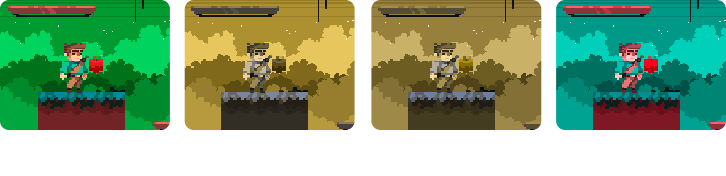

A guide for using simulations to createchromatically accessible games
Imagine you’re playing a game and the way you see color makes it really hard for you to, for exemple, know who's the enemy and who's there to help you. Not fun, right? These kinds of situations are super common, and we, as professionals in the game development industry, have to minimize them so everyone can have a good time.
It is estimated that color blindness is present, at different levels of severity, in 8% of the world's male population and 0.5% of the female population[1]. Color blindness is also quite varied. There are three main types: protan-, deutan- and tritan-.
Color blindness simulations are cheap and simple-to-use tools that can help you identify chromatic accessibility problems in your games. With them, you can start testing you games by yourself or with your team even in early prototyping. However, simulating an experience is not the same as living it, so you must be careful not to distance yourself from the real needs of color-blind players.
Sounds tricky, hun? But we created 9 recommendations to help you.